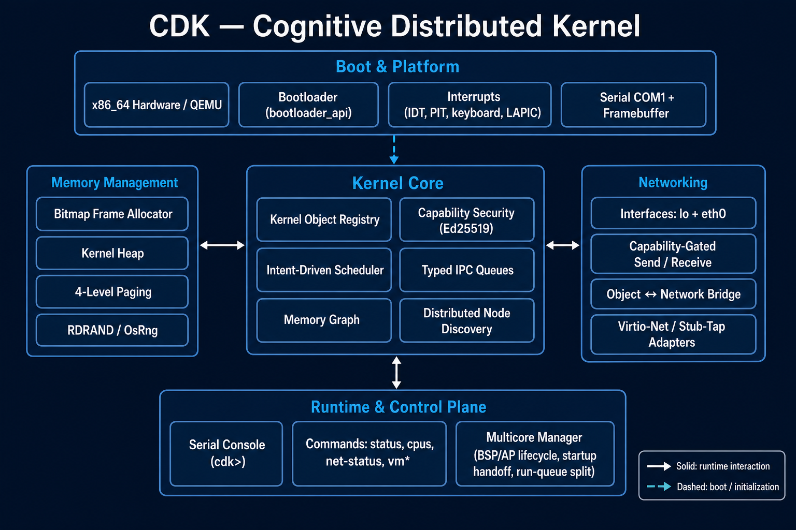

Agents are isolated processes
Each agent runs in ring 3 with its own address space. User memory lives in a dedicated page-table slot, and every pointer a syscall touches is checked before it's read.
Open source · Rust · Post-quantum · Early preview
AI agents are starting to act: move money, read case files, call tools. CDK is a bare-metal Rust kernel where an agent can only do what the kernel has cryptographically allowed it to do. Its permissions are signed with hybrid classical and post-quantum cryptography, and the kernel checks them on every action.
Most agent platforms enforce permissions in user space, on top of a general-purpose OS. Anything that compromises the layer underneath can bypass them. CDK puts the rules in the kernel itself.
Each agent runs in ring 3 with its own address space. User memory lives in a dedicated page-table slot, and every pointer a syscall touches is checked before it's read.
No root user. An agent can only reach an object, tool, model, or network endpoint if it holds a capability the kernel issued for it.
Capability tokens carry hybrid Ed25519 + ML-DSA-65 (NIST FIPS 204) signatures. Both must verify, so forging one means breaking both schemes.
cdk> capverify obj-1
unsigned rejected (no valid proof)
forged (attacker issuer) rejected (UnknownIssuer)
kernel-issued accepted
kernel-issued + escalated rejected (no valid proof)CDK isn't a GPU driver project or a Linux replacement. Heavy inference runs on Linux with the vendor stack. CDK is the control plane: it decides which agent may use which model or tool, with what data, and records that it happened.
┌──────────── CDK (trust kernel) ────────────┐ ┌──────── Linux ────────┐
│ agents = isolated ring-3 processes │ │ GPU driver + CUDA/... │
│ hybrid PQ-signed capability tokens │ │ inference servers │
│ policy + human-approval gates (planned)│ │ MCP tool servers │
│ tamper-evident signed audit log │ └───────────▲───────────┘
│ PQ-secure channel X25519+ML-KEM (planned)│◄── virtio-vsock ┘
└────────────────────────────────────────────┘Early development preview, not for production use. What exists today and what's next:

rustup target add x86_64-unknown-none
rustup toolchain install nightly
rustup component add rust-src llvm-tools-preview --toolchain nightly
sudo apt install qemu-system-x86
./run_qemu.sh
At the cdk> prompt try issuer,
capverify obj-1, and elf-smoke, or type
help.
The kernel, capability model, agent runtime, and all cryptography. Algorithms and formats are always public; security rests on keys, not on secrecy.
For finance and defense: quantum key distribution (QKD) integration (always combined with ML-KEM), hardware security modules (HSMs), certified builds, sector policy packs, and support.
CDK is intended for defensive and protective computing with human oversight of consequential actions.
{kind=link}